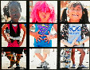

Skip to main content
About Us
Contact Us
FAQs
Language Assistance
English
español
中文: 繁體版
Việt-ngữ
한국어
Tagalog
Русский
U.S. Department of Education
Search for:
Toggle navigation
U.S. Department of Education
Student Loans
Grants
Laws
Data
Student Art Exhibit Program 2
Student Art Exhibit Program 2
continued from page 1
Featured Works from Student Art Exhibits
RFK Community Schools Opening
Department of Education
May 15, 2014
RFK Community Schools Exhibit
Department of Education
May 15, 2014
Iredell-Statesville Schools Opening
Department of Education
May 2, 2014
Iredell-Statesville Schools Exhibit
Department of Education
May 2, 2014
Thelonious Monk Jazz Informance
Department of Education
April 4, 2014
Concept Schools Opening
Department of Education
March 31, 2014
Concept Schools Exhibit
Department of Education
March 31, 2014
National PTA Opening
Department of Education
January 14, 2014
National PTA Exhibit
Department of Education
January 14, 2014
International VSA Opening
Department of Education
November 19, 2013
International VSA Exhibit
Department of Education
November 19, 2013
Scholastic Art & Writing Award Opening
Department of Education
September 13, 2013
Scholastic Art & Writing Award Exhibit
Department of Education
September 13, 2013
North Carolina Art Education Association Opening
Department of Education
June 21, 2013
North Carolina Art Education Association Exhibit
Department of Education
June 21, 2013
Flint Institute of Arts Student Art Opening
Department of Education
April 22, 2013
Military Child Education Coalition Student Art Opening
Department of Education
April 3, 2013
National PTA Student Art Opening
Department of Education
January 29, 2013
National PTA Student Art Exhibit
Department of Education
January 29, 2013

Scholastic Alliance for Young Artists and Writers opening
Department of Education
October 12, 2012
Scholastic Alliance for Young Artists and Writers exhibit
Department of Education
October 12, 2012
The Island of Puerto Rico: Music, Color and Flavor Opening
Department of Education
September 6, 2012
The Island of Puerto Rico: Music, Color and Flavor Exhibit
Department of Education
September 6, 2012
New Mexico Student Art Opening
Department of Education
August 2, 2012
New Mexico Student Art Exhibit
Department of Education
August 2, 2012
National PTA Student Art Opening
Department of Education
January 13, 2012
National PTA Student Art Exhibit
Department of Education
January 13, 2012
The Association of Art Museum Directors presents:
Museums:pARTners in Learning
Department of Education
May 15, 2012
Scholastic Alliance for Young Artists and Writers Student Art Exhibit
Department of Education
September 14, 2011
Military Child Education Coalition
Department of Education
July 14, 2011
Chicago Public Schools
Department of Education
March 25, 2011
D.C. Public Schools
Department of Education
January 26, 2011
International Education Week
Department of Education
November 16, 2010
Scholastic Alliance for Young Artists and Writers
Department of Education
October 8, 2010
Maryland Public Schools
Department of Education
September 20, 2010
Native American Student Poster Competition
Department of Education
July 21, 2010
Colorado Students Opening
Department of Education
May 4, 2010
International VSA Festival Opening
Department of Education
June 7, 2010
International VSA Festival Exhibit
Department of Education
June 7, 2010
Schuylkill Valley High School
Department of Education
March 4, 2010
National PTA
Department of Education
January 15, 2010
VSA Arts Opening
Department of Education
November 16, 2009
VSA Arts Exhibit
Department of Education
November 16, 2009
Scholastic Alliance for Young Artists and Writers
Department of Education
October 27, 2009
Chesterfield County, VA Public Schools
Department of Education
September 25, 2009
Native American Student Poster Competition
Department of Education
July 21, 2009
Art Institutes
Department of Education
September 25, 2009
Kyrgyzstan Student Arts
Department of Education
April 29, 2009
National PTA
Department of Education
February 10, 2009
VSA Arts
Department of Education
November 17, 2008
Scholastic Art & Writing Award
Department of Education
October 7, 2008
Latino Art Beat
Department of Education
March 5, 2008
National PTA
Department of Education
January 14, 2008
Mongolian Children Opening
Department of Education
November 13, 2007
Mongolian Children Exhibit
Department of Education
November 13, 2007
Scholastic Art and Miami Dade Public Schools Opening
Department of Education
October 3, 2007
Scholastic Art and Miami Dade Public Schools Exhibit
Department of Education
October 3, 2007
VSA Arts
Department of Education
June 5, 2007
National PTA
Department of Education
February, 2007
Scholastic Art & Writing Award
Department of Education
August, 2006
Native American Student Art
Department of Education
July, 2006
RIF National Student Poster Contest
Department of Education
May, 2006
Posted in:
Student Art Exhibit Program
How Do I Find...?
Student loans, forgiveness
College accreditation
Every Student Succeeds Act (ESSA)
FERPA
FAFSA
1098-E Tax Form
More...
Information About...
Transforming Teaching
Family and Community Engagement
Early Learning
K-12 Reforms


.png)